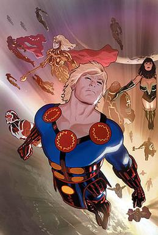

THE ETERNALS |
|  |
The Eternals are a fictional race of humanoids appearing in American comic books published by Marvel Comics. They are described as an offshoot of the evolutionary process that created sentient life on Earth. The original instigators of this process, the alien Celestials, intended the Eternals to be the defenders of Earth, which leads to the inevitability of war against their destructive counterparts, the Deviants. The Eternals were created by Jack Kirby, and made their first appearance in The Eternals #1 (July 1976).[1] The Eternals will debut in the Marvel Cinematic Universe with their own feature film, The Eternals, on February 12, 2021. |